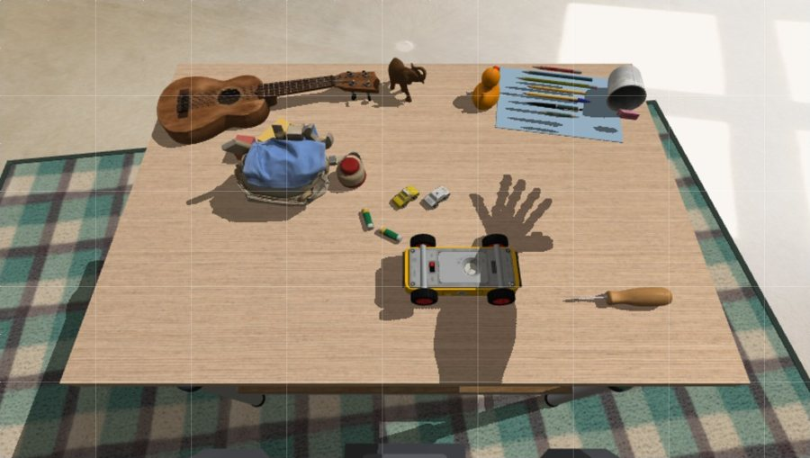
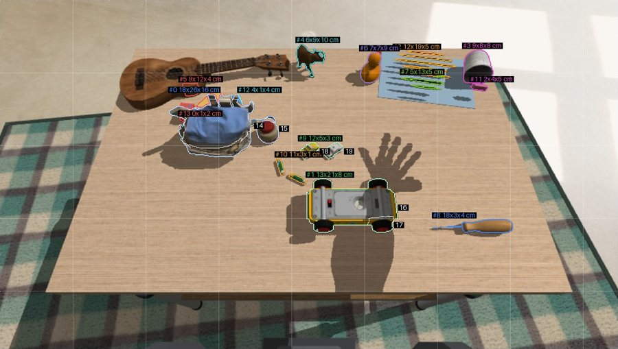
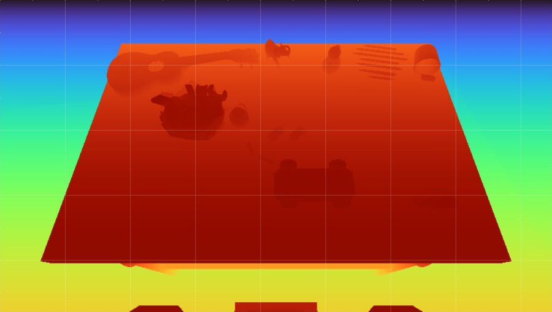
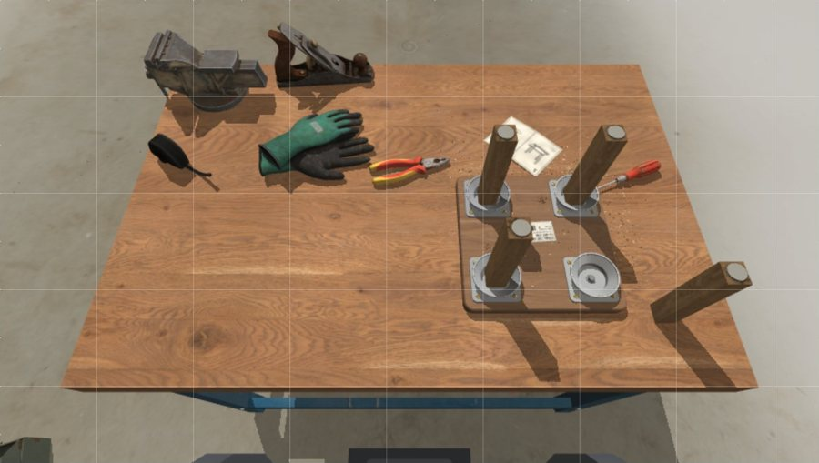
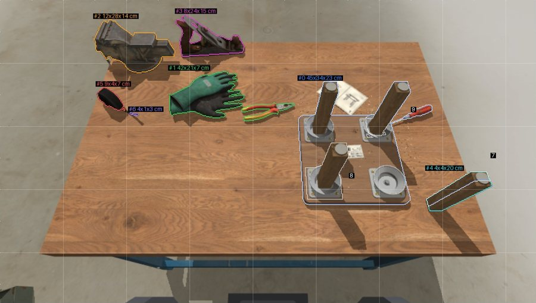
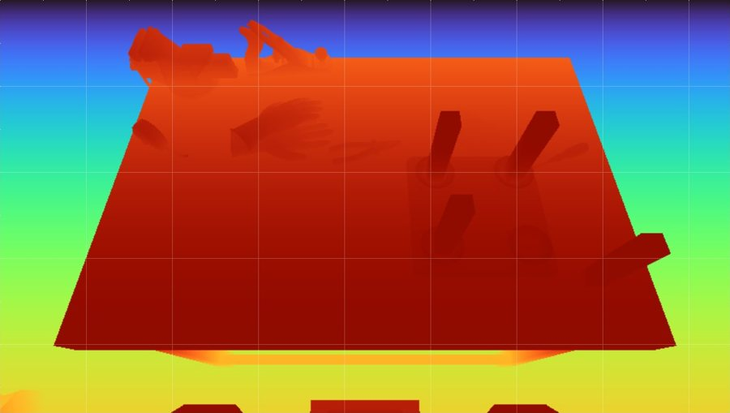

dashboard · skills (interactive) · inside the harness · the 50 tasks · built 2026-11-27 23:19 EST by python s2/s2loop/examples_page.py
S2's look, from the agent's start to its plan and report the skill program, from its start to its refusal. The same scale in both rows.
The instruction the session gave: “Unscrew the toy's battery cover and open it.” tick budget 3000 refused by the program: bench not held or not placed



| clock | who | step | took | what |
|---|---|---|---|---|
| 22:09:06 | S2 | the looking agent is started | a fresh agent with the look instructions (protocol 4); it knows the folder's name and nothing else of the task | |
| 22:09:39 | S2 | its first command (its own clock) | it reads its instructions, then opens a session | |
| 22:09:54 | S2 | its session is open, nothing moves | the session gives the instruction, the tick budget and the three pictures above | |
| S2 | measuring step 1 | 30.5 s in the session | a fragment of 970 characters; tool: point_at (the 3D point at a pixel), over grids of pixels; 0 ticks used | |
| S2 | measuring step 2 | 82.0 s in the session | a fragment of 313 characters; tool: point_at (the 3D point at a pixel), over grids of pixels; 0 ticks used | |
| 22:17:56 | S2 | the plan is decided (its own clock) | 8 min 17 s since its first command | 2 call(s): transport (6 keypoints), then push (3 keypoints) |
| 22:19:16 | S2 | the plan file, last written | s2/outputs/harness_round/s0skill/loop/t07_battery_cover/keypoints.json | |
| S2 | session closed, report handed back | 10 min 01 s for the whole look | the agent's own record: 111,056 tokens, 28 tool calls | |
| 22:19:48 | program | the skill program starts | one command, no flag: the task folder, the plan file, a run name, an episode number | |
| program | its own look | 22 things located in its own head view; it takes thing 8 (0.1 mm from S2's first keypoint), reads it as “bar_lying” | ||
| program | grasps offered by the proposer | 8 recorded grasps it can try, of the object classes cyl30x200z50_local_mocap, cyl35x200z50_local_mocap, cyl40x200z50_local_mocap, quad50_local_mocap, rect20x35x200z50_local_mocap, screw_local_mocap | ||
| 22:20:14 | program | bench job c0_cal ends | 14 s | a short job without randomisation: where the thing sits in S0's fingers with this grasp |
| 22:20:30 | program | bench job c0 ends | 15 s | S0 in 16 randomised environments: lifted 12, held to the release 2, set down within 20 mm 0 |
| 22:20:46 | program | bench job c1_cal ends | 15 s | a short job without randomisation: where the thing sits in S0's fingers with this grasp |
| 22:21:04 | program | bench job c1 ends | 17 s | S0 in 16 randomised environments: lifted 16, held to the release 6, set down within 20 mm 0 |
| 22:21:23 | program | bench job c2_tilts ends | 19 s | the grasp taken turned, 5 tilts x 16 environments: held to the release 2 of 16, 0 of 16, 7 of 16, 3 of 16, 4 of 16 |
| 22:21:42 | program | bench job c3_tilts ends | 18 s | the grasp taken turned, 5 tilts x 16 environments: held to the release 3 of 16, 2 of 16, 4 of 16, 1 of 16, 3 of 16 |
| 22:22:01 | program | bench job c4_tilts ends | 19 s | the grasp taken turned, 5 tilts x 16 environments: held to the release 1 of 16, 1 of 16, 5 of 16, 0 of 16, 2 of 16 |
| 22:22:20 | program | bench job c5_tilts ends | 19 s | the grasp taken turned, 5 tilts x 16 environments: held to the release 3 of 16, 5 of 16, 8 of 16, 3 of 16, 7 of 16 |
| 22:22:36 | program | bench job c5t425_cal ends | 15 s | a short job without randomisation: where the thing sits in S0's fingers with this grasp |
| 22:22:54 | program | bench job c5t425 ends | 17 s | S0 in 16 randomised environments: lifted 13, held to the release 5, set down within 20 mm 0 |
| program | arm planner | 7 calls for the plan as written (c0: 2, c1: 1, c5t425: 4 by candidate grasp; each well under a second), 0 in the search for a nearest feasible plan | ||
| 22:22:54 | program | refused, nothing moved | 3 min 06 s since its start | bench not held or not placed |
Why, in S2's words. The toy car lies belly up; its battery cover is a flush grey panel held by ONE screw at the bottom of a round dished well, and a screwdriver lies 10 cm to its right: so call 1 carries the screwdriver, stands it up, sets its tip on that screw and turns it counter-clockwise (the loosening way) as far as one held turn goes, and call 2 pushes the freed cover out of its seat with a fingertip in the well. The screw must come first because nothing on the cover can move while it holds; both calls cost about 876 + 150 + 430 = 1456 of the 3000 ticks, and I expect them to do only part of the job (see assumed 1 to 4).
call 1: transport: the screwdriver
| x (m) | y (m) | z (m) | axis (which end up) | heading (deg) | what, in S2's words | |
|---|---|---|---|---|---|---|
| K1 | -0.3988 | -0.4000 | 0.9081 | [-0.026, -0.9997, 0.0] | the screwdriver's middle now, lying; axis = from the TIP (must be down at the end) to the handle's butt (must be up) | |
| K2 | -0.3988 | -0.4000 | 1.0300 | lifted 12 cm, clear of the table | ||
| K3 | -0.3590 | -0.1190 | 1.1300 | [0.0, 0.0, 1.0] | upright over the well: tip at 1.038, 8 cm over the cover and 6.6 cm over the wheels | |
| K4 | -0.3590 | -0.1190 | 1.0580 | [0.0, 0.0, 1.0] | straight down: tip 7.5 mm over the well's rim | |
| K5 | -0.3590 | -0.1190 | 1.0425 | [0.0, 0.0, 1.0] | 0 | straight down: tip on the screw head (0.9505 + 0.092) |
| K6 | -0.3590 | -0.1190 | 1.0425 | [0.0, 0.0, 1.0] | 60 | the same point, the tool turned about its own upright axis 60 deg counter-clockwise seen from above with the tip kept in the screw: the working stroke |
The place: The screwdriver stands tip down on the cover's screw at the bottom of the well and is turned there; the place is where the tool WORKS, not where it can rest.
call 2: push, direction [1.0, 0.0, 0.0], travel 50 mm: the battery cover, pushed on the far wall of its own well: the only face on the flush cover
| x (m) | y (m) | z (m) | axis (which end up) | heading (deg) | what, in S2's words | |
|---|---|---|---|---|---|---|
| P1 | -0.3443 | -0.1190 | 0.9540 | the middle of the well's far wall, 4.5 mm under the cover's top: where a fingertip standing in the well meets it | ||
| P2 | -0.3193 | -0.1190 | 0.9540 | halfway | ||
| P3 | -0.2943 | -0.1190 | 0.9540 | the same point with the cover slid 5 cm toward the far side, its seat open over most of its width |
The place: the cover slid out of its seat toward the car's far side, the battery bay uncovered
Final report of the looking agent (S2), t07 battery cover, 2026-11-27 22:19 (as handed back to the coordinator; shortened only by its file path). Instruction (as the session gave it): "Unscrew the toy's battery cover and open it." Tick budget: 3000 (read from the step replies). Session daily50_t07-ffedb69b, closed; the steps used 0 ticks. Six session requests: start, 2 status, 2 zero-tick measuring steps, close. Wall time 22:09:39 to 22:17:56. What I measured and chose - Measured: the toy is a yellow car lying on its roof (object 1), with a level underside plate at z 0.9584. The battery cover is a flush panel in it (5.9 x 8.4 cm, flush within 0.3 mm), held by one screw on the floor of a round dished well. The well's middle is (-0.359, -0.119), its rim 37.6 mm across, its floor about 21 x 23 mm at z 0.9505 (7.9 mm deep). A screwdriver (object 8, 18.4 cm) lies on the bare table with its tip pointing at the car, 10 cm from the car's end. - Call 1, transport: the screwdriver is lifted, stood tip down over the well, lowered onto the screw head (K5), then turned 60 degrees counter-clockwise in place (K6). 60 degrees is the most a held thing can be turned. - Call 2, push: a level push toward +x on the well's far wall, 5 cm, to slide the freed cover out of its seat. The two calls cost about 1456 of the 3000 ticks. I expect this plan to do only part of the job, or to be refused. The reasons are in "assumed": - A real screw needs several whole turns; one grasp a session gives one 60-degree stroke. - Let go standing on the screw, the screwdriver falls over and may lie across the well, blocking call 2. - One look cannot tell how the cover opens. I took it to slide toward +x; the other readings are a slide toward the robot (coordinates given) or a hinged or lift-off cover, which no skill can open. - The well's wall leans 52 degrees from upright and the car is loose, so the push may shove the whole car instead of the cover. - The screw's slot, the thread direction and the arm's reach were not seen or tested. Lines of the instructions that were unclear or wrong for this scene 1. No field for a working stroke. "heading_deg" is defined for turning a thing to fit its place. I used K5 to K6 at the same point plus a "turn" block to ask for a turn with the tip seated; whether the skill reads it that way is unknown. 2. Five or six keypoints, the last two straight down onto the place. This cannot express "work at the screw, then put the tool down elsewhere", so the plan ends with the tool let go on the screw. 3. Push room. The push asks for about 10 cm free behind P1 on the line; inside the well there are 26 mm. There is no way to say that the pushed thing is a sliding part of a loose numbered object. 4. `status <session>` does not return the tick budget; I read 3000 from the step replies. 5. The robot's hand shadows a third of the cover in the head picture. Colours there are unusable, so the cover's right edge is from depth only. No permission was denied.
Drag to turn, wheel to zoom, shift-drag to pan; the slider and play move the views.
Call 1 as S2 wrote it: 6 keypoints in the scene's own frame, 7 located things drawn as boxes.
The owner's question after the refusals: take the trajectory the skill generated and give it to S0 to track. Done here in S0's own training environment: a free hand over flat ground, no arm, no scene, 8 copies without randomisation. This measures S0 alone; it is not a run on the robot in the task's scene (that stays refused by the program, and a copy of the program with its check switched off was not made).
| over the 8 copies | |
|---|---|
| picked up and lifted | 8 of 8 |
| fingers still on the thing at the release row | 3 of 8 (lost at rows 330 to 368 of 395, in the carry) |
| the thing from its reference while carried, median per copy | 6 to 9 mm |
| the thing from its reference at the release row | 21 to 169 mm |
| largest turn away from the reference while carried | 43 to 120 degrees |
| lying on the ground at the end (the trajectory ends with it standing) | 7 of 8 |
What it shows. S0 takes the lying tool and follows the trajectory within a few millimetres through the lift and the first part of the carry. It loses the tool where the trajectory stands it upright. The program's own bench job (the tabs above, and the table below) gives the same picture with S0 shown the screwdriver's surface, as a session would show it.
The free check in the test bench: S0 itself is given each candidate reference in 16 randomised copies of its training environment. The criterion, fixed before any run: kept at the row before the release in at least 14 of 16: the thing within 50 mm of its reference and its long axis within 45 deg of the reference's axis (the bench's own thresholds; a bar's roll about its own axis is not counted). No grasp met it, so nothing was sent to the robot.
| candidate | the recorded grasp (its object class) | S0 in the bench | the arm planner |
|---|---|---|---|
| c0 | screw, hand turned -48.0 deg | lifted 12 of 16, held to the release 2, kept in place and upright at the release 4 (14 needed), set down within 20 mm 0 | the arm planner accepted it |
| c1 | screw, hand turned -93.0 deg | lifted 16 of 16, held to the release 6, kept in place and upright at the release 11 (14 needed), set down within 20 mm 0 | the arm planner accepted it |
| c2 | cyl40x200z50, hand turned -90.0 deg | this grasp stands the tool up by the other end, so it is taken turned: 5 tilts tried, best 7 of 16 held to the release (at 42.5 degrees), set down 0 of 16 | |
| c3 | cyl35x200z50, hand turned -93.0 deg | this grasp stands the tool up by the other end, so it is taken turned: 5 tilts tried, best 4 of 16 held to the release (at 42.5 degrees), set down 0 of 16 | |
| c4 | cyl30x200z50, hand turned -92.0 deg | this grasp stands the tool up by the other end, so it is taken turned: 5 tilts tried, best 5 of 16 held to the release (at 42.5 degrees), set down 0 of 16 | |
| c5 | rect20x35x200z50, hand turned -91.0 deg | this grasp stands the tool up by the other end, so it is taken turned: 5 tilts tried, best 8 of 16 held to the release (at 42.5 degrees), set down 0 of 16 | its best tilt went on to a full check (next row) |
| c5t425 | rect20x35x200z50, hand turned -91.0 deg, grasp taken turned 42.5 deg | lifted 13 of 16, held to the release 5, kept in place and upright at the release 8 (14 needed), set down within 20 mm 0 | the arm planner accepted it |
The object classes are those of the recorded human grasps: screw = a screwdriver; cyl40x200z50 = a cylinder 40 mm thick and 200 mm long; rect20x35x200z50 = a bar of 20 x 35 mm. In the bench the thing itself is the library shape nearest the screwdriver's size, a cylinder 35 mm thick.
What this says: S0 picks the lying screwdriver up in most copies, and loses it while the wrist and the fingers together stand it up (the turn asked is 104 degrees: at most 57 by the wrist, the rest in the hand). The push of call 2 was never reached.
s2/outputs/harness_round/s0skill/loop/t07_battery_cover/keypoints.json; its session (pictures, the measuring steps): wuji-rl-gmt-releases/r6/s2/dexharness/runs/live/daily50_t07_battery_cover/20261128T030954Z-6acceab9s2/outputs/harness_round/s0skill/v3/cases/t07_battery_cover_x1 (result.json, runner.log, every candidate reference as .npz); bench jobs: s2/outputs/harness_round/s0skill/v3/runs/cases_t07_battery_cover_x1__*s2/outputs/harness_round/s0skill/examples; S0 tracking the trajectory (the job, its record, the film): s2/outputs/harness_round/s0skill/examples/s0_tracksThe instruction the session gave: “Screw the last leg onto the stool.” tick budget 6000 refused by the program: planner refused



| clock | who | step | took | what |
|---|---|---|---|---|
| 22:23:18 | S2 | the looking agent is started | a fresh agent with the look instructions (protocol 4); it knows the folder's name and nothing else of the task | |
| 22:23:24 | S2 | its first command (its own clock) | it reads its instructions, then opens a session | |
| 22:23:46 | S2 | its session is open, nothing moves | the session gives the instruction, the tick budget and the three pictures above | |
| S2 | measuring step 1 | 41.2 s in the session | a fragment of 573 characters; tool: point_at (the 3D point at a pixel), over grids of pixels; 0 ticks used | |
| S2 | measuring step 2 | 118.7 s in the session | a fragment of 390 characters; tool: point_at (the 3D point at a pixel), over grids of pixels; 0 ticks used | |
| 22:32:31 | S2 | the plan is decided (its own clock) | 9 min 07 s since its first command | 1 call(s): transport (6 keypoints) |
| 22:32:31 | S2 | the plan file, last written | s2/outputs/harness_round/s0skill/loop/t46_table_leg/keypoints.json | |
| S2 | session closed, report handed back | 9 min 31 s for the whole look | the agent's own record: 93,494 tokens, 18 tool calls | |
| 22:33:05 | program | the skill program starts | one command, no flag: the task folder, the plan file, a run name, an episode number | |
| program | its own look | 10 things located in its own head view; it takes thing 4 (1.1 mm from S2's first keypoint), reads it as “bar_upright” | ||
| program | grasps offered by the proposer | 2 recorded grasps it can try, of the object classes ell50x30_yuanke, quad50_noitom_b0302 | ||
| program | arm planner | 20 calls for the plan as written (c0: 11, c1: 9 by candidate grasp; each well under a second), 0 in the search for a nearest feasible plan | ||
| 22:33:21 | program | refused, nothing moved | 16 s since its start | planner refused |
Why, in S2's words. The stool lies seat-down on the table with four metal cups on its underside; three hold a leg, the fourth (near right) is empty with a short stud in its middle, and the fourth leg stands upright on the bare table 14 cm to its right: the job is that leg standing in that cup, down on the cup's floor like the other three, and turned about its own axis onto the stud. ONE transport does all the skills can do of this: lift the leg as it stands, bring it over the cup, lower it straight down through the cup's cone onto the stud and turn it clockwise (seen from above) while it goes down the last 7 mm; a second grasp for more turning is not possible (N4) and a push cannot turn a square post further (see assumed), so the other 5000 ticks stay unused.
call 1: transport: the fourth stool leg, standing upright on the table to the right of the stool, pad end up
| x (m) | y (m) | z (m) | axis (which end up) | heading (deg) | what, in S2's words | |
|---|---|---|---|---|---|---|
| K1 | -0.4190 | -0.4698 | 0.9919 | [0, 0, 1] | the leg's middle as it stands now | |
| K2 | -0.4190 | -0.4698 | 1.0770 | [0, 0, 1] | straight up off the table | |
| K3 | -0.3892 | -0.4047 | 1.0770 | [0, 0, 1] | halfway across, level | |
| K4 | -0.3593 | -0.3395 | 1.0770 | [0, 0, 1] | 0 | over the cup's middle, upright |
| K5 | -0.3593 | -0.3395 | 1.0236 | [0, 0, 1] | 0 | straight down through the cone: the lower end on the stud's top (0.9223), inside the throat |
| K6 | -0.3593 | -0.3395 | 1.0169 | [0, 0, 1] | -60 | seated: the lower end on the cup's floor (0.9156), turned 60 deg clockwise on the way down; let go here, upright |
The place: standing upright in the empty near-right cup of the stool, its lower end down on the cup's floor over the stud, its top level with the other three legs (1.118), turned clockwise about its own axis as far as one grasp gives
Final report of the looking agent (S2), t46 table leg, 2026-11-27 22:33 (as handed back to the coordinator; shortened only by its file path). Instruction as the session gave it: "Screw the last leg onto the stool." Tick budget: 6000. The two measuring steps used 0 ticks. Session daily50_t46-8a3a4cd5, closed. Four requests: start, two zero-tick measuring steps, close. Started 22:23:24, file written 22:32:31. About 275 s of the 900 s planning time was used by the last step reply. What I measured and chose - Scene: the stool lies seat-down, a 30 x 30 cm board with its top at 0.9123. It has four metal cups; three hold legs (36 mm squares at heading 0, tops at 1.1181, bottoms on the cup floors). The near-right cup is empty, with its middle at (-0.3593, -0.3395). - Empty cup: rim at 0.9365, a 45-degree cone from radius 39 mm down to 27 mm, a throat of radius about 26.7 mm, floor at 0.9156, and a stud about 10 mm across and 6.7 mm tall in the middle. The leg's corners have about 1.2 mm of room in the throat, the flats 8.7 mm. - Loose leg: object 4 stands upright and free on the bare table at (-0.4190, -0.4698), 36 mm square and 202.5 mm tall, pad end up, 14.3 cm from the cup. Nothing stands between higher than the cup rim. - Plan: one transport, shape bar_upright, six keypoints. It lifts the leg 85 mm, carries it level over the cup, lowers it through the cone onto the stud top (K5, middle at 1.0236), then seats it on the floor (K6, middle at 1.0169) with heading_deg -60, clockwise from above. About 5000 ticks stay unused. What "assumed" says one look could not settle - How much turning counts as screwed on: 60 degrees is the most one grasp gives. A real thread needs several turns, which would need re-grasping. If the leg seats and the word is FAIL, that is the likely cause. - The leg's lower end is unseen: I assumed a hole that takes the stud. - Thread sense: clockwise is my assumption; the fitted legs' headings tell nothing. - The hold must be on the leg's upper part: at rest the lowest 21 mm is inside the cup, so the planner may refuse at K5 or K6. - Options not planned: a wind-up (arrive at +30 to +60, end at -60, for 90 to 120 degrees in the cup) is the first thing to try in a second look. A push to turn the leg further is ruled out: a square post turns at most 45 degrees and then jams, and the push has no force guard. Lines of the instructions unclear or wrong for this scene 1. Budget against one grasp: the 6000 ticks suggest the task expects several turn-and-regrasp rounds, but the rules allow one grasp a session. The skills cannot spend the budget on this job. 2. heading_deg: the protocol defines it only as a turn "to fit". It does not say whether a heading on a middle keypoint is read, or whether a heading change between the last two keypoints is carried out while lowering. The K5 to K6 screw turn depends on that. 3. No field for a turn about the thing's own axis as the job itself. 4. The rehearsal route is said to know a three-sided opening only. This is a round throat with 1.2 mm at the corners, so it is unclear whether stating the room sends the plan to a route that cannot handle it. 5. The wrist-at-the-lower-end figure for a held upright rod is from the old environment. Whether the cup, plate and board count as "fixed to the table" (hand passes through) is not stated, and it decides whether K5 and K6 are reachable. The permission system denied nothing. Nothing in the task folder and no earlier record of this task was opened.
Drag to turn, wheel to zoom, shift-drag to pan; the slider and play move the views.
Call 1 as S2 wrote it: 6 keypoints in the scene's own frame, 2 located things drawn as boxes.
The owner's question after the refusals: take the trajectory the skill generated and give it to S0 to track. Done here in S0's own training environment: a free hand over flat ground, no arm, no scene, 8 copies without randomisation. This measures S0 alone; it is not a run on the robot in the task's scene (that stays refused by the program, and a copy of the program with its check switched off was not made).
| over the 8 copies | |
|---|---|
| picked up and lifted | 8 of 8 |
| fingers still on the thing at the release row | 8 of 8 |
| the thing from its reference while carried, median per copy | 8 to 8 mm |
| the thing from its reference at the release row | 10 to 11 mm |
| largest turn away from the reference while carried | 4 to 7 degrees |
How the trajectory was got. The first run wrote no reference: the arm planner refused both grasps before the program builds one for the bench. A measuring-only copy of the program (s0_skill_v3_probe.py: with its no-motion flag, a grasp without an arm plan still has its reference written and given to S0 in the bench; no check is lowered, nothing can be sent) was run once, 63 seconds. Its bench jobs, by the program's own counts:
| grasp | bench | lifted | held to the release | set down within 20 mm | let go at rest within 10 mm |
|---|---|---|---|---|---|
| grasp 1 | no randomisation | 8 of 8 | 8 | 8 | 0 |
| grasp 1 | training's randomisation | 5 of 8 | 5 | 5 | 4 |
| grasp 2 | no randomisation | 8 of 8 | 8 | 1 | 0 |
| grasp 2 | training's randomisation | 5 of 8 | 5 | 0 | 0 |
What it shows. With grasp 1 S0 tracks this trajectory: it lifts the standing prism, carries it, turns it (57 degrees by the wrist, 3 in the hand) and sets it down within 20 mm in 8 of 8 copies; under training's randomisation it picks it up in 5 of 8 and sets those 5 down. So for the leg what stops the run is the arm in this scene, not S0. On flat ground: no cup, no stud, and a library prism in the leg's place.
The arm planner (reach and collisions against the depth view) was asked 20 times for the plan as written, with both grasps the proposer offered and every variant the program has (clearances, raised grasp, approach posture). It accepted none, so no reference went to the bench and nothing was sent to the robot. N stands for a number that differs from call to call.
| candidate | the recorded grasp (its object class) | planner calls | what the planner answered |
|---|---|---|---|
| c0 | quad50, hand turned 8.0 deg | 11 | 5 x: no inverse-kinematics solution: the best seed stays N mm and N degrees from the pose; joints N, N at the limit 4 x: no inverse-kinematics solution: the best seed stays N mm and N degrees from the pose; joints N, N, N at the limit 1 x: at the goal of segment N (free) linkN_right touches tianji_stand (the robot itself) with the hand posture commanded:open 1 x: at the goal of segment N (free) linkN_right touches tianji_stand (the robot itself) with the hand posture stated |
| c1 | ell50x30, hand turned 90.0 deg | 9 | 5 x: following the path of segment N needs N rad/s at row N; N rad/s are allowed 3 x: on the path of segment N (follow) the arm link (linkN_right) is N mm from the scene seen in the depth images with the hand posture stated; N mm of clearance are required; 1 x: on the path of segment N (follow) linkN_right touches tianji_stand (the robot itself) with the hand posture stated |
The attempt that came farthest: the arm link link5_right was 1.9 mm short of the 5.0 mm clearance asked against object #0 of the marked picture (the stool), in the carry, with the leg's middle at [-0.4, -0.434, 1.079]. The search for a nearest feasible plan changes only the landing, and no plan came as far as the landing, so it had nothing to change.
s2/outputs/harness_round/s0skill/loop/t46_table_leg/keypoints.json; its session (pictures, the measuring steps): wuji-rl-gmt-releases/r6/s2/dexharness/runs/live/daily50_t46_table_leg/20261128T032346Z-bc48c585s2/outputs/harness_round/s0skill/v3/cases/t46_table_leg_x1 (result.json, runner.log, every candidate reference as .npz); bench jobs: s2/outputs/harness_round/s0skill/v3/runs/cases_t46_table_leg_x1__*s2/outputs/harness_round/s0skill/examples; S0 tracking the trajectory (the job, its record, the film): s2/outputs/harness_round/s0skill/examples/s0_tracksOne look and one run each: development runs, not a counted series. Nothing here was verified by a second reader, because nothing was judged.